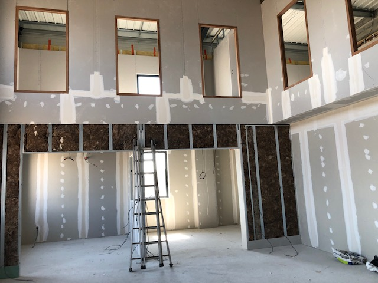

Votre carreleur sur l'Île de Ré, de Rivedoux aux Portes
Carrelage, faïence, chape, terrasse et piscine dans les dix communes de l'île. Basés à Nieul-sur-Mer, à 20 minutes du pont : assez près pour venir voir le chantier avant de chiffrer, et pour repasser si besoin.

Six maisons sur dix, sur l'île, sont des résidences secondaires. On travaille avec ça tous les jours.
Vous n'avez pas besoin d'être là. Nous prenons les clés, nous documentons le chantier, et vous décidez à distance. La réception peut se faire en visio, ou lors de votre prochain passage.
Poser à Ré, ce n'est pas poser à La Rochelle
Air salin, bâti ancien en pierre, règles d'urbanisme strictes et saison touristique : quatre contraintes qui décident du matériau et du calendrier.
Le choix du carreau et du joint
En bord de mer, nous écartons les matériaux poreux et les joints ciment standard. Grès cérame pleine masse et joints hydrofuges, voire époxy en extérieur exposé.
Murs en pierre, sols irréguliers
Les maisons rétaises bougent et respirent. Ragréage fibré, désolidarisation, et parfois refus du grand format quand le support ne le permet pas.
PLUi restrictif
Sur les extérieurs visibles depuis la rue, les teintes et matériaux sont encadrés. Nous vous disons ce qui passe et ce qui ne passera pas avant commande.
Accès et calendrier
Livraisons et circulation compliquées de juillet à août, et locations saisonnières à ne pas bloquer. Les gros chantiers se programment d'octobre à mai.
Commune par commune
Nous ne créons une page commune que lorsqu'un vrai chantier y a été réalisé.

Pièce de vie : cloisons, plafond et sol pierre
Plâtrerie et carrelage grand format par la même équipe, surface à compléter.
Mosaïque de sol dans une maison de village
Motif calepiné sur mesure, pose sur trame, durée à compléter.
Cloisons et distribution avant carrelage
Ossature métallique, passage des réseaux, chantier hors saison.Trois chantiers rétais minimum pour lancer cette page, un par commune ensuite. Sans chantier réel dans une commune, nous ne publions pas de page dédiée : Google sanctionne le contenu dupliqué.
Ce que nous faisons sur l'île
Carrelage & faïence
Sols intérieurs, salle de bain, douche italienne, crédence. Matériaux choisis pour l'exposition marine.
Terrasse & dalle sur plot
La solution la plus fréquente sur l'île : pose sur plots, réversible, sans terrassement lourd.
Piscine carrelée
Bassin, margelles, plage, mosaïque. Chantiers programmés hors saison de baignade.
Chape & ragréage
Chape liquide, traditionnelle, ragréage fibré sur planchers anciens. Posée par la même équipe que le carrelage.
Plâtrerie & placo
Cloisons, doublages, faux plafonds. Utile quand la rénovation touche à la distribution des pièces.
Rénovation complète
Cloisons, chape, carrelage et faïence sur un seul devis, une seule équipe, une seule garantie.
Du pont jusqu'au bout de l'île
Temps de trajet estimés depuis notre dépôt de Nieul-sur-Mer, hors affluence estivale.
Travaux sur l'île, en pratique
Facturez-vous un déplacement sur l'île ?
Le péage et le trajet sont intégrés au devis, annoncés dès le chiffrage. Pas de supplément découvert en fin de chantier.
Pouvez-vous intervenir entre deux locations ?
Oui pour les petits chantiers, en fenêtre datée. Pour une rénovation complète, il faut bloquer la maison : nous planifions plutôt d'octobre à mai.
Quel carrelage tient face à l'air marin ?
Grès cérame pleine masse en extérieur, joints hydrofuges ou époxy selon l'exposition. Nous évitons les pierres calcaires non traitées en front de mer.
Travaillez-vous avec les agences de location ?
Oui, y compris pour la remise des clés et le suivi quand le propriétaire est absent.
Puis-je obtenir un devis sans être sur place ?
Nous avons besoin de voir le chantier, mais vous n'avez pas besoin d'y être : une personne sur place pour ouvrir suffit, nous vous envoyons photos et relevé.
Un chantier sur l'Île de Ré ?
Dites-nous la commune, la surface et ce que vous voulez faire poser. Réponse sous 24h, devis chiffré sous 48h après la visite.